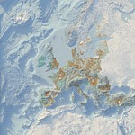
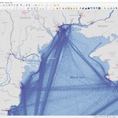
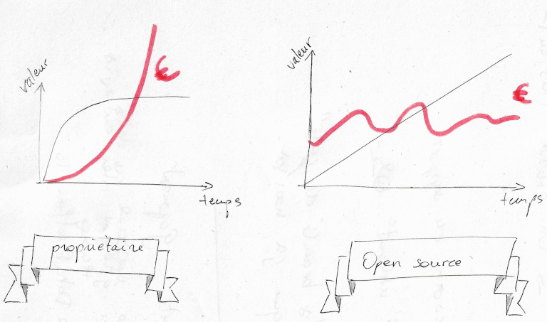
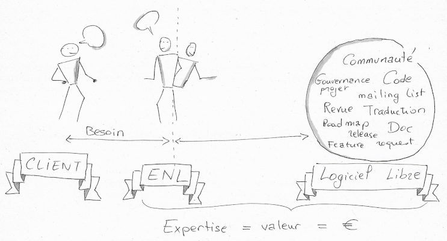

<!DOCTYPE html>
<html lang="en">
  <head>
    <meta charset="utf-8" />
    <meta name="viewport" content="width=device-width, initial-scale=1.0, maximum-scale=1.0, user-scalable=no" />

    <title>Comment rendre le logiciel libre pérenne pour tous ses acteurs ?</title>
    <link rel="shortcut icon" href="./favicon.ico" />
    <link rel="stylesheet" href="./dist/reset.css" />
    <link rel="stylesheet" href="./dist/reveal.css" />
    <link rel="stylesheet" href="./dist/theme/black.css" id="theme" />
    <link rel="stylesheet" href="./css/highlight/base16/zenburn.css" />

    <link rel="stylesheet" href="./css/oslandia.css" />

  </head>
  <body>
    <div class="reveal">
      <div class="slides"><section  data-markdown><script type="text/template">

### Comment rendre le logiciel libre pérenne pour tous ses acteurs ? 
##### Exemple de partenariat entre Orange et Oslandia sur le logiciel QGIS

Capitole du libre 2022 - Toulouse - 19/11/2022

<table>
<tr><td>

</td><td></td>
</table>

Gilles Viton - Julien Cabieces
</script></section><section  data-markdown><script type="text/template">
## Qui sommes nous ?
</script></section><section  data-markdown><script type="text/template">

### Gilles Viton
- Responsable du programme Open Source chez Orange France
- Vice-président du TOSIT
- Membre du board OW2
</script></section><section  data-markdown><script type="text/template">
### Julien Cabieces
- Dévelopeur C++/Python SIG chez Oslandia
- Core committer QGIS
-  @CabiecesJ
-  @troopa81

<br/>




</script></section><section  data-markdown><script type="text/template">
### Ecosystème

*[...] ensemble formé par une communauté d'êtres vivants en interaction avec leur environnement.*

*Les composants de l'écosystème développent un dense réseau de dépendances, d'échanges d'énergie, d'information et de matière permettant le maintien et le développement de la vie.* 

**Tout le monde doit y trouver son compte**
</script></section><section  data-markdown><script type="text/template">
## Pérenne pour l'utilisateur
</script></section><section  data-markdown><script type="text/template">
### Modèle économique
- Pas de coût de licenses exhorbitantes
- Rémunère le travail, pas la propriété ➡ Maitrise des coûts
- **Visibilité financière long terme**


</script></section><section  data-markdown><script type="text/template">
### Besoin de support

- Libre != Gratuit
- Sans support, pas de mise en production
    - Garantie logicielle ➡️ contrat de maintenace
- Modes de contractualisation
    - Maintenance
    - Assistance
    - Développement
</script></section><section  data-markdown><script type="text/template">
### Concurrence

- 1 outil, plusieurs sociétés expertes
</script></section><section  data-markdown><script type="text/template">
### Pérennne pour le logiciel libre 

- Promotion
- Crédibilité
- Corrections d'anomalies régulières
- Nouvelle fonctionnalités
  - Par exemple
	- Refactor QGIS server
	- Platforme de suivi des performances
	- Sécurisation
  - 📈 **Stabilité** / Industrialisation

**Le client peut orienter la roadmap par ses apports**
</script></section><section  data-markdown><script type="text/template">
## Pérenne pour l'ENL
#### (**E**ntreprise du **N**umerique **L**ibre)
</script></section><section  data-markdown><script type="text/template">
### Le client a besoin de nous

- Proxy Client / Logiciel libre
- Périmètre limité  ➡ Valeur 📈
  - On ne cherche pas à tout faire


</script></section><section  data-markdown><script type="text/template">
### On a besoin du client
- Contrats de support ➡ long terme ➡ Stabilité
    - Contribution continue au logiciel
	- ~~Feature driven~~
- Crédibilité
- Réseau
</script></section><section  data-markdown><script type="text/template">
### Pérenne pour le contributeur

- Reconnaissance des pairs, de la communauté, de la société
- Reconnaissance de l'expertise 💵
    - Salaire au niveau marché
    - Pas besoin de devenir *manager*
- Mis en avant du collaborateur
</script></section><section  data-markdown><script type="text/template">
### Conclusion

- Une stratégie Gagnant-gagnant...
- à publiciser pour *recruter* d'autres sociétés
- Groupe inter-entreprise: TOSIT, OW2
    - financement mutalisé
    - stratégie commune (ex: https://trunkdataplatform.io/ )
</script></section><section  data-markdown><script type="text/template">
# Questions ?

Capitole du libre 2022 - Toulouse - 19/11/2022

<table>
<tr><td>

</td><td></td>
</table>

Gilles Viton - Julien Cabieces

</script></section></div>
    </div>

    <script src="./dist/reveal.js"></script>

    <script src="./plugin/markdown/markdown.js"></script>
    <script src="./plugin/highlight/highlight.js"></script>
    <script src="./plugin/zoom/zoom.js"></script>
    <script src="./plugin/notes/notes.js"></script>
    <script src="./plugin/math/math.js"></script>
    <script>
      function extend() {
        var target = {};
        for (var i = 0; i < arguments.length; i++) {
          var source = arguments[i];
          for (var key in source) {
            if (source.hasOwnProperty(key)) {
              target[key] = source[key];
            }
          }
        }
        return target;
      }

      // default options to init reveal.js
      var defaultOptions = {
        controls: true,
        progress: true,
        history: true,
        center: true,
        transition: 'default', // none/fade/slide/convex/concave/zoom
        plugins: [
          RevealMarkdown,
          RevealHighlight,
          RevealZoom,
          RevealNotes,
          RevealMath
        ]
      };

      // options from URL query string
      var queryOptions = Reveal().getQueryHash() || {};

      var options = extend(defaultOptions, {}, queryOptions);
    </script>


    <script>
      Reveal.initialize(options);
    </script>
  </body>
</html>
